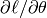
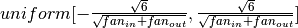

Multilayer Perceptron¶
Note
This section assumes the reader has already read through Classifying MNIST digits using Logistic Regression. Additionally, it uses the following new Theano functions and concepts: T.tanh, shared variables, basic arithmetic ops, T.grad, L1 and L2 regularization, floatX. If you intend to run the code on GPU also read GPU.
Note
The code for this section is available for download here.
The next architecture we are going to present using Theano is the
single-hidden-layer Multi-Layer Perceptron (MLP). An MLP can be viewed as a
logistic regression classifier where the input is first transformed using a
learnt non-linear transformation  . This transformation projects the
input data into a space where it becomes linearly separable. This intermediate
layer is referred to as a hidden layer. A single hidden layer is sufficient
to make MLPs a universal approximator. However we will see later on that
there are substantial benefits to using many such hidden layers, i.e. the very
premise of deep learning. See these course notes for an introduction to
MLPs, the back-propagation algorithm, and how to train MLPs.
. This transformation projects the
input data into a space where it becomes linearly separable. This intermediate
layer is referred to as a hidden layer. A single hidden layer is sufficient
to make MLPs a universal approximator. However we will see later on that
there are substantial benefits to using many such hidden layers, i.e. the very
premise of deep learning. See these course notes for an introduction to
MLPs, the back-propagation algorithm, and how to train MLPs.
This tutorial will again tackle the problem of MNIST digit classification.
The Model¶
An MLP (or Artificial Neural Network - ANN) with a single hidden layer can be represented graphically as follows:

Formally, a one-hidden-layer MLP is a function , where  is the size of input vector
is the size of input vector  and
and  is
the size of the output vector
is
the size of the output vector  , such that, in matrix notation:
, such that, in matrix notation:
with bias vectors ,  ; weight matrices
; weight matrices
 ,
,  and activation functions
and activation functions  and
and  .
.
The vector constitutes the hidden layer.
is the weight matrix connecting the input vector
to the hidden layer. Each column represents the weights
from the input units to the i-th hidden unit. Typical choices for
include , with ,
or the logistic function, with . We will be using
in this tutorial because it typically yields to faster training
(and sometimes also to better local minima). Both the
and are scalar-to-scalar functions but their natural
extension to vectors and tensors consists in applying them element-wise
(e.g. separately on each element of the vector, yielding a same-size vector).
The output vector is then obtained as: .
The reader should recognize the form we already used for
Classifying MNIST digits using Logistic Regression. As before,
class-membership probabilities can be obtained by choosing as the
 function (in the case of multi-class classification).
function (in the case of multi-class classification).
To train an MLP, we learn all parameters of the model, and here we use Stochastic Gradient Descent with minibatches. The set of parameters to learn is the set . Obtaining the gradients  can be achieved through the backpropagation algorithm (a special case of the chain-rule of derivation). Thankfully, since Theano performs automatic differentiation, we will not need to cover this in the tutorial!
Going from logistic regression to MLP¶
This tutorial will focus on a single-hidden-layer MLP. We start off by implementing a class that will represent a hidden layer. To construct the MLP we will then only need to throw a logistic regression layer on top.
The initial values for the weights of a hidden layer  should be uniformly
sampled from a symmetric interval that depends on the activation function. For
activation function results obtained in [Xavier10] show that the
interval should be
, where
should be uniformly
sampled from a symmetric interval that depends on the activation function. For
activation function results obtained in [Xavier10] show that the
interval should be
, where
 is the number of units in the -th layer,
and is the number of units in the -th layer. For
the sigmoid function the interval is .
This initialization ensures that, early in training, each neuron operates in a
regime of its activation function where information can easily be propagated
both upward (activations flowing from inputs to outputs) and backward
(gradients flowing from outputs to inputs).
is the number of units in the -th layer,
and is the number of units in the -th layer. For
the sigmoid function the interval is .
This initialization ensures that, early in training, each neuron operates in a
regime of its activation function where information can easily be propagated
both upward (activations flowing from inputs to outputs) and backward
(gradients flowing from outputs to inputs).
Note that we used a given non-linear function as the activation function of the hidden layer. By default this is tanh, but in many cases we might want
to use something else.
If you look into theory this class implements the graph that computes
the hidden layer value .
If you give this graph as input to the LogisticRegression class,
implemented in the previous tutorial Classifying MNIST digits using Logistic Regression, you get the output
of the MLP. You can see this in the following short implementation of
the MLP class.
In this tutorial we will also use L1 and L2 regularization (see
L1 and L2 regularization). For this, we need to compute the L1 norm and the squared L2
norm of the weights  .
.
As before, we train this model using stochastic gradient descent with
mini-batches. The difference is that we modify the cost function to include the
regularization term. L1_reg and L2_reg are the hyperparameters
controlling the weight of these regularization terms in the total cost function.
The code that computes the new cost is:
We then update the parameters of the model using the gradient. This code is
almost identical to the one for logistic regression. Only the number of
parameters differ. To get around this ( and write code that could work
for any number of parameters) we will use the list of parameters that
we created with the model params and parse it, computing a gradient
at each step.
Putting it All Together¶
Having covered the basic concepts, writing an MLP class becomes quite easy. The code below shows how this can be done, in a way which is analogous to our previous logistic regression implementation.
The user can then run the code by calling:
python code/mlp.py
The output one should expect is of the form:
Optimization complete. Best validation score of 1.690000 % obtained at iteration 2070000, with test performance 1.650000 %
The code for file mlp.py ran for 97.34m
On an Intel(R) Core(TM) i7-2600K CPU @ 3.40GHz the code runs with approximately 10.3 epoch/minute and it took 828 epochs to reach a test error of 1.65%.
To put this into perspective, we refer the reader to the results section of this page.
Tips and Tricks for training MLPs¶
There are several hyper-parameters in the above code, which are not (and, generally speaking, cannot be) optimized by gradient descent. Strictly speaking, finding an optimal set of values for these hyper-parameters is not a feasible problem. First, we can’t simply optimize each of them independently. Second, we cannot readily apply gradient techniques that we described previously (partly because some parameters are discrete values and others are real-valued). Third, the optimization problem is not convex and finding a (local) minimum would involve a non-trivial amount of work.
The good news is that over the last 25 years, researchers have devised various rules of thumb for choosing hyper-parameters in a neural network. A very good overview of these tricks can be found in Efficient BackProp by Yann LeCun, Leon Bottou, Genevieve Orr, and Klaus-Robert Mueller. In here, we summarize the same issues, with an emphasis on the parameters and techniques that we actually used in our code.
Nonlinearity¶
Two of the most common ones are the and the function. For reasons explained in Section 4.4, nonlinearities that are symmetric around the origin are preferred because they tend to produce zero-mean inputs to the next layer (which is a desirable property). Empirically, we have observed that the has better convergence properties.
Weight initialization¶
At initialization we want the weights to be small enough around the origin
so that the activation function operates in its linear regime, where gradients are
the largest. Other desirable properties, especially for deep networks,
are to conserve variance of the activation as well as variance of back-propagated gradients from layer to layer.
This allows information to flow well upward and downward in the network and
reduces discrepancies between layers.
Under some assumptions, a compromise between these two constraints leads to the following
initialization: 
for tanh and
for sigmoid. Where is the number of inputs and the number of hidden units.
For mathematical considerations please refer to [Xavier10].
Learning rate¶
There is a great deal of literature on choosing a good learning rate. The simplest solution is to simply have a constant rate. Rule of thumb: try several log-spaced values () and narrow the (logarithmic) grid search to the region where you obtain the lowest validation error.
Decreasing the learning rate over time is sometimes a good idea. One simple
rule for doing that is where
is the initial rate (chosen, perhaps, using the grid search
technique explained above),  is a so-called “decrease constant”
which controls the rate at which the learning rate decreases (typically, a
smaller positive number,
is a so-called “decrease constant”
which controls the rate at which the learning rate decreases (typically, a
smaller positive number,  and smaller) and
and smaller) and  is the
epoch/stage.
is the
epoch/stage.
Section 4.7 details procedures for choosing a learning rate for each parameter (weight) in our network and for choosing them adaptively based on the error of the classifier.
Regularization parameter¶
Typical values to try for the L1/L2 regularization parameter  are . In the framework that we described so
far, optimizing this parameter will not lead to significantly better
solutions, but is worth exploring nonetheless.
are . In the framework that we described so
far, optimizing this parameter will not lead to significantly better
solutions, but is worth exploring nonetheless.